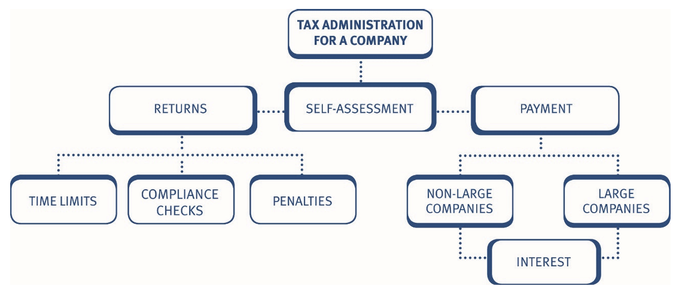
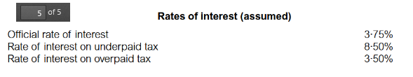
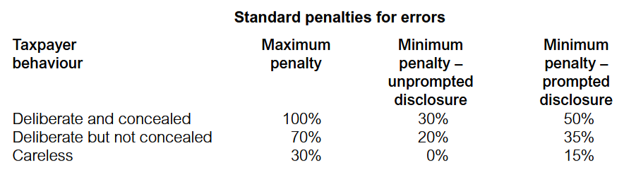

Chapter 16: Tax administration for a company
- explain and apply the features of the self-assessment system as it applies to companies, including the use of iXBRL.
- recognise the time limits that apply to the filing of returns and the making of claims.
- explain how large companies are required to account for corporation tax on a quarterly basis and compute the quarterly instalment payments.
- list the information and records that taxpayers need to retain for tax purposes.
- explain the circumstances in which HM Revenue & Customs can make a compliance check into a self-assessment tax return.
- explain the procedures for dealing with appeals and First and Upper Tier Tribunals.
- calculate late payment interest and state the penalties that can be charged.

The self-assessment system for companies
As for individuals, self-assessment applies for corporate taxpayers. Responsibility rests with the company to:
- calculate its own corporation tax liability for each accounting period
- submit a self-assessment corporation tax return within 12 months after the end of the period of account
- pay any corporation tax due within nine months and one day after the end of the accounting period.
Given the timing of the due date for payment of tax, in practice, many companies will aim to complete the self-assessment tax return prior to the nine month deadline for paying the corporation tax.
The self-assessment tax return
The self-assessment tax return must be submitted by the later of:
- 12 months after the end of the period of account, and
- three months after the issue of the notice to file a return.
The return must:
- contain all information required to calculate the company’s taxable total profits
- include a self-assessment of the amount of corporation tax payable for that accounting period
- be submitted online.
A company has to submit a copy of its financial accounts together with the self-assessment tax return.
All companies must file self-assessment returns and copies of accounts electronically using ‘Inline eXtensible Business Reporting Language’ (iXBRL).
iXBRL is the global standard for exchanging business information in an electronic format and tags the accounts so they can be read by a computer.
HMRC provide free online filing software applications for companies with straightforward tax affairs that automatically produces and submits a self-assessment return with accounts and computations in the required iXBRL format, as well as calculating the tax liability.
For other companies, commercial software applications and services enable the submission of the tax return in one of three ways:
- Integrated software applications – automatically inserts iXBRL tags to data and produces iXBRL accounts and/or computations.
- Managed tagging services – provided by agents whereby the company outsources the process of iXBRL tagging to convert non-iXBRL accounts and computations into the required format.
- Conversion software applications – allows the company to apply appropriate iXBRL tags to each item of data itself to convert the accounts and computation into the required format.
iXBRL
The items to be tagged are those which appear in ‘taxonomies’. HMRC has published minimum tagging lists for UK GAAP, UK IFRS® and corporation tax computation taxonomies.
Making claims
Any claims must be included in the self-assessment tax return. A claim for a relief, allowance or repayment must be quantified at the time that the claim is made. For example, if loss relief is claimed, then the amount of the loss must be stated.
Penalties for failure to submit a return
HMRC can impose fixed penalties and tax-geared penalties for the failure to submit a return, depending on the length of the delay in submitting the return.
Determination assessments
To prevent companies deliberately delaying the submission of the return HMRC may determine the amount of corporation tax due by issuing a determination assessment.
- The determination assessment is treated as a self-assessment by the company, and is replaced by the actual self-assessment when it is submitted by the company.
- There is no appeal against a determination assessment. Instead, the company must displace it with the actual self-assessment return.
- A determination assessment can be raised at any time within three years of the filing date (i.e. four years from the end of the period of account).
Records
Companies are required to keep and preserve records necessary to make a correct and complete return.
The records that must be kept include records of: - all receipts and expenses - all goods purchased and sold - all supporting documents relating to the transactions of the business, such as accounts, books, contracts, vouchers and receipts.
The records must be retained until the later of: - six years after the end of the accounting period - the date on which a compliance check into the return is completed - the date on which it becomes impossible for a compliance check to be started.
A penalty may be charged for failure to keep or retain adequate records. The maximum penalty is only likely to be imposed in the most serious cases, such as where a company deliberately destroys its records in order to obstruct an HMRC compliance check.
Tax returns – amendments and errors
Either the company or HMRC may make amendments to a return:
- HMRC may correct any obvious errors or mistakes within nine months of the date that the return is filed with them. For example, they will correct arithmetical errors or errors of principle. This type of correction does not mean that HMRC has accepted the return as accurate.
- A company can amend the return within 12 months of the filing date. For an AP ending on 31 March 2025, the filing date is 31 March 2026, and the company has until 31 March 2027 to make any amendments.
- If an error is discovered at a later date, then the company can make a claim for overpayment relief to recover any corporation tax overpaid.
Claims for overpayment relief
Where an assessment is excessive due to an error or mistake in a return, the company can claim relief. A claim can be made in respect of errors made, and mistakes arising from not understanding the law.
The claim must be made within four years of the end of the accounting period to which it relates.
Due dates for payment
The payment date for corporation tax depends on the size of the company:
- For companies which are not ‘large’ – the due date is nine months and one day after the end of the accounting period.
- For ‘large’ companies – the liability is settled by quarterly instalment payments.
All companies must pay their corporation tax electronically. Very large companies (i.e. those with augmented profits above £20 million) have different quarterly instalment payment dates from large companies. These payment dates are not examinable.
Quarterly instalment payments for large companies
Large companies do not have the benefit of paying corporation tax nine months after the end of the accounting period. Instead, large companies must pay their tax by instalments, starting during the accounting period.
Definition of a large company
The key points here are:
- For TX a large company is one with augmented profits for the accounting period in question of more than £1.5 million.
- The £1.5 million threshold is time apportioned for short accounting periods, and is divided by the total number of associated companies.
The threshold of £1.5 million is included within the tax rates and allowances provided to you in the examination.
Companies that become large during an accounting period do not have to make instalment payments provided:
- their augmented profits for the accounting period do not exceed £10 million, and
- they were not a large company for the previous accounting period. However, instalments are never due if a company’s corporation tax liability is below £10,000 (time apportioned for a short period).
Example 1: Large Company
Zachary Ltd has taxable total profits of £1.4 million in the year ended 31 March 2026. The company also received a dividend of £103,000 from another UK company in which it holds 5% of the shares. Zachary Ltd was a large company in the year ended 31 March 2025.
Calculate Zachary Ltd’s augmented profits for the year ended 31 March 2026 and explain if the company will be required to pay corporation tax by instalments.
Solution
Associated companies
The £1.5 million and £10 million thresholds are divided by the number of associated companies.
For the purposes of the profits threshold used to determine the due date(s) of corporation tax, it is the number of associated companies at the end of the previous accounting period that is relevant. The number of associated companies for this purpose will be provided in questions in the TX exam.
Example 2: Associated companies
Stationery plc had four associated companies at the end the year ended 31 March 2025.
Calculate the augmented profit threshold that will apply for the purposes of determining whether Stationery plc is required to pay corporation tax by instalments for the year ended 31 March 2026.
Solution
The augmented profit threshold used to decide if Stationery plc is large is divided by five (i.e. Stationery plc plus its four associated companies at the end of the previous accounting period).
Therefore, if Stationery plc’s augmented profits exceed £300,000 (£1,500,000/5) it will be a large company for the purposes of paying its corporation tax liability for the year ended 31 March 2026.
Example 3: Associated companies
Flower Ltd had five associated companies at the end of the year ended 31 March 2025.
Calculate the augmented profit threshold for corporation tax payment purposes for the companies in Flower Ltd’s group for the year ended 31 March 2026.
Solution
Instalment dates
Four quarterly instalments are due. The first payment is due on the 14th day of the 7th month after the start of the accounting period and the final payment is due on the 14th day of the 4th month after the accounting period end.
The other payments are due on the 14th day, every three months in between.
Therefore, for a 12-month accounting period, the instalments are in months 7, 10, 13 and 16 from the start of the period.
Basis of payment
Instalments are based on the expected corporation tax liability for the current accounting period. It is, therefore, necessary for companies to produce an accurate forecast of their current period tax liability.
Interest will be charged or paid based on the actual corporation tax due per the final tax return.
Companies will normally be able to obtain a refund, if they subsequently find that instalments have been overpaid.
Example 4: Quarterly instalment payments for large companies
Twister plc estimates that its corporation tax liability for the year ended 31 December 2025 will be £800,000. Twister plc has been a large company for corporation tax payment purposes for a number of years.
State when Twister plc’s corporation tax liability will be due.
Solution
Twister plc’s corporation tax liability is due by instalments:
£200,000 on 14 July 2025 £200,000 on 14 October 2025 £200,000 on 14 January 2026 £200,000 on 14 April 2026
Example 5: Quarterly instalment payments for large companies
Typhoon Ltd has an expected corporation tax liability of £2,000,000 for the year ended 31 March 2026. Typhoon Ltd has been a large company for corporation tax purposes for a number of years.
State when Typhoon Ltd’s corporation tax liability for the year ended 31 March 2026 will be due.
Solution
Special rules apply where the accounting period is less than 12 months.
Short accounting periods
Where the accounting period is less than 12 months:
- First instalment due by: 4th day of 7th month after the start of the AP (as normal)
- Subsequent instalments are due at 3 monthly intervals thereafter, until the date of the final instalment is reached.
- Final instalment due by: 14th day of 4th month after the end of the accounting period.
Using formula:
\(\text{Instalment Amount} = \text{Estimated CT Liability} \times \left(\frac{n}{\text{Length of AP}}\right)\)
Where n = 3 months for a full quarterly instalment But n = 2 or 1 for the final instalment if the period since the previous instalment is less than 3 months.
Example 6: Quarterly instalment payments - Short accounting periods
Delta Ltd is a large company with a short accounting period (AP) of 7 months running from 1 January to 31 July. The company’s estimated Corporation Tax (CT) liability for this period is £420,000. Delta Ltd is required to pay its corporation tax by quarterly instalments.
Calculate the amount of the first instalment and the final instalment payable by Delta Ltd.
Solution
Using your formula:
\(\text{Instalment Amount} = \text{Estimated CT Liability} \times \left(\frac{n}{\text{Length of AP}}\right)\)
- Total Number of Instalments
- A standard 12-month period has 4 instalments.
- For a short period, we find how many 3-month blocks (n=3) fit into the total length.
- For a 7-month period, it divides into:
- Instalment 1: 3 months
- Instalment 2: 3 months
- Instalment 3 (Final): 1 remaining month (since 3 + 3 + 1 = 7)
- Calculating Instalment 1 (n = 3)
- Formula: \(\text{£420,000} \times \left(\frac{3}{7}\right)\)
- Calculation: £420,000 ÷ 7 = £60,000 × 3
- Answer: £180,000
- Calculating Instalment 2 (n = 3)
- Formula: \(\text{£420,000} \times \left(\frac{3}{7}\right)\)
- Answer: £180,000
- Calculating the Final Instalment (n = 1)
- Formula: \(\text{£420,000} \times \left(\frac{1}{7}\right)\)
- Calculation: £420,000 ÷ 7 = £60,000 × 1
- Answer: £60,000
Example 7: Quarterly instalment payments - Short accounting periods
Assume Twister plc in “Example 4 Quarterly instalment payments for large companies” prepared accounts for the 8 months ended 31 December 2025 and that its corporation tax liability is £800,000.
Show when Twister plc’s corporation tax liability will be due.
Solution
Twister plc’s corporation tax liability will be due by instalments as follows:
| Due date | Paying | Amount |
|---|---|---|
| 14.11.2025 | (14th day of 7th month after start of AP) | 3/8 × £800,000 = £300,000 |
| 14.2.2026 | (three months later) | 3/8 × £800,000 = £300,000 |
| 14.4.2026 | (14th day of 4th month after end of AP) | 2/8 × £800,000 = £200,000 |
Interest
There are two key types of interest:
Late payment interest
calculated at 8.5% p.a.
Repayment interest
calculated at 3.5% p.a.
The interest rates will be provided in the tax rates and allowances within the examination.

Late payment interest
Interest is automatically charged if corporation tax is paid late.
Interest runs:
- from: the normal due date
- to: the date of payment.
Interest paid to HMRC on corporation tax paid late is a deductible expense from NTLR income.
Eaxample 1: Interest
Able Ltd prepares accounts to 31 March.
The company has a corporation tax liability of £75,000, for the year ended 31 March 2026. Able Ltd paid £25,000 of its corporation tax liability on 1 January 2027, but did not pay the balance of £50,000 until 15 March 2027.
Explain the period that interest will run on the late payment of corporation tax. Assume Able Ltd is not a large company.
Solution
Repayment interest
Interest is paid by HMRC on any overpayment of corporation tax. Where interest is due, the interest runs:
from: the later of:
- the due date
- the date of actual payment
- the due date
to: the date of repayment.
Interest paid by HMRC on overpayments of corporation tax is taxable NTLR income.
Penalties
In addition to interest on the late payment of tax, HMRC can impose penalties:
- Standard penalty
HMRC has standardised penalties across taxes for the submission of incorrect returns and failure to notify liability to tax.

The penalty is calculated as a percentage of ‘potential lost revenue’ which is generally the tax unpaid. The percentage charged can be reduced where the taxpayer makes a disclosure and co-operates with HMRC to establish the amount of tax unpaid.
Penalties for late filing of returns :
| Date return is filed | Penalty |
|---|---|
| within 3 months of filing date | £100 fixed penalty |
| more than 3 months after filing | Fixed penalty increased to £200 (N) |
| Additional penalties: | |
| 6 – 12 months after filing date | Additional 10% of tax outstanding 6 months after filing date |
| More than 12 months after filing date | Additional penalty increased to 20% |
| Failure to keep and retain records | Up to £3,000 per accounting period |
N: Fixed penalties rise to £500 and £1,000 if persistently filed late (i.e. returns for the two preceding periods were also late)
Example 1: Self-assessment for companies - Penalities
Late Ltd submitted its self-assessment return for the year ended 31 March 2026, on 30 November 2027. The corporation tax due of £50,000 was paid on the same day. Late Ltd has submitted its previous tax returns on time.
State the penalties that are due as a result of the late submission of the tax return.
Solution
The tax return should have been submitted by 31 March 2027, and so it is eight months late.
The fixed penalty is therefore £200, and the tax-geared penalty is £5,000 (£50,000 at 10%).
Example 2: Self-assessment for companies - Penalities
Everlate Ltd submitted its corporation tax return for the year ended 28 February 2026, on 30 September 2027. This is the fifth consecutive occasion the company has submitted its return late.
The corporation tax liability for the year was £100,000 which was paid when the return was submitted.
State the penalties that are due as a result of the late submission of the tax return.
Solution
Compliance checks into returns
HMRC have the right to enquire into the completeness and accuracy of any self-assessment tax return and issue discovery assessments under their compliance check powers. The procedures and rules are similar tothose for individuals.
The compliance check (enquiry) may be made as a result of any of the following:
- suspicion that income is undeclared
- suspicion that deductions are being incorrectly claimed
- other information in HMRC’s possession
- being part of a random review process.
Additional points:
- HMRC do not have to state a reason for the compliance check and are unlikely to do so.
- HMRC must give written notice before commencing a compliance check by the following dates:
| If return filed: | Notice must be issued within 12 months of: |
|---|---|
| On time | the actual delivery of the tax return to HMRC |
| Late | the 31 January, 30 April, 31 July or 31 October next following the actual date of delivery of the tax return to HMRC |
Compliance check procedure
HMRC can demand that the company produce any or all of the following:
- documents
- accounts
- other written particulars
- full answers to specific questions.
The information requested should be limited to that connected with the return.
• The company has 30 days to comply with the request. An appeal can be made against the request. • The compliance check ends when HMRC give written notice that it has been completed. • The notice will state the outcome of the compliance check and HMRC’s amendments to the self-assessment. • The company then has 30 days to appeal, in writing, against HMRC’s amendment.
Discovery assessments
HMRC has the capacity to raise additional assessments, referred to as discovery assessments. The key points are:
- The use of a discovery assessment is restricted where a self-assessment return has already been made. However, although compliance checks must normally begin within 12 months of the actual submission date, a discovery assessment can be raised at a later date to prevent the loss of corporation tax.
- Unless the loss of corporation tax was brought about carelessly or deliberately by the company, a discovery assessment cannot be raised where full disclosure was made in the return, even if this is found to be incorrect.
- HMRC will only accept that full disclosure has been made if any contentious items have been clearly brought to their attention – perhaps in a covering letter.
- Only a company that makes full disclosure in the self-assessment tax return, therefore, has absolute finality 12 months after the actual submission date.
The time limit for making a discovery assessment is:
| Type of error | Time from the end of the AP |
|---|---|
| Basic time limit | four years |
| Careless error | six years |
| Deliberate error | twenty years |
A discovery assessment may be appealed against.
Determination assessments
To prevent companies deliberately delaying the submission of the return HMRC may determine the amount of corporation tax due by issuing a determination assessment.
- The determination assessment is treated as a self-assessment by the company, and is replaced by the actual self-assessment when it is submitted by the company.
- There is no appeal against a determination assessment. Instead, the company must displace it with the actual self-assessment return.
- A determination assessment can be raised at any time within three years of the filing date (i.e. four years from the end of the period of account).